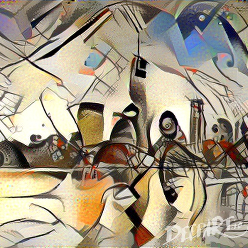
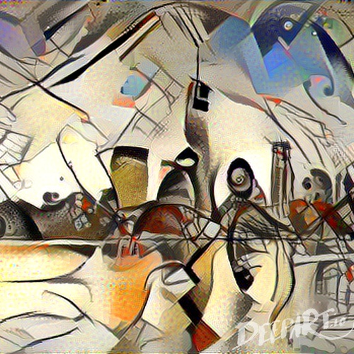

Name: Binh Le
E-mail: binhle@mit.edu
Other Assignments:
Training result without any changes:
Training result with learning rate changed from 0.1 to 0.5, seemed like it was unable to converge so accuracy did not improve:
Training result with output values changed from 16 to 10, did not have a big impact on accuracy changes:
Training result with zero pad changed from 2 to 6, seemed like it improved accuracy:
Draw an input, modify it, and observe how the results at each layer change as you change the drawing. Create some inputs that look vaguely like digits, but that confuse the network, i.e., where two or more of the labels register:
A seven drawn with a hanging hook on the top also shows results with other numbers:
The model is unable to interpret a four being drawn in this way:
A smoothly drawn five is mislabeled, possibly because fives in the training set were drawn with more aggressive edges:
1. MIT

2. New York City
 

3. Emirates Stadium


1. What happens when you pass an image through the same filter several times? Do you observe any interesting characteristics or padding artifacts?: When I passed the original image of Stata through the filter three times, some of the coloring style shifted more towards the provided style image. The content stayed about the same but you can observe that the brown building to the left of the image has an increasingly blue shading.
2. Apply a filter to an image and then apply another filter to that already-filtered image. Is the result similar to what you would get when you apply the second filter to the original image?: The result of applying two different filters is different than just applying the second filter to the original image. The result of filtering an already filtered image is a styling that is the combination of both filter styles as seen by the marks on the forehead of the woman. These marks were created after filtering the first style and also shows up in the second filtering. But when we only filter the original image, we observe only the application of that second filter.
3. Try different combinations of filters and number of times you filter an image. Note on your website if you have any interesting observations or insights: I tried filtering the original Stata image through 5 consecutive filters. I found that by passing an image through multiple composite filters with different styles, the content of the image begins to change to become a composite of the content of all of the style images. When using a single style image like in part 1 of this section, the styling seems to shift more towards the style image while the content stays about the same after consecutive filterings. In the last Stata image in this part, you can see that details from the original image is now gone such as the windows on the face of the building.

For this section, I used this CNN architecture to train the model as shown by this code:
1. Try changing the learning rate, batch size, and number of batches. Make sure that these numbers are reasonable to start (i.e. won't take too long to run on your computer).
2. Try changing some of the other parameters like field size, stride, output, etc.
3. Do you have a hypothesis for why CIFAR-10 is so much harder to train on than Fashion MNIST and MNIST (i.e. it’s more difficult to achieve a 90%+ accuracy) while Fashion MNIST has similar training times to MNIST (even though Fashion MNIST is more complex than MNIST)?: A difference between the CIFAR-10 dataset is that it also has color which adds another dimension that our CNN model is forced to interpret. This alone adds a lot more complexity compared to Fashion MNIST even though the content of the datasets are both more complex than MNIST.
4. How does adding more convolutional layers relate to accuracy and training speed? Is there a point at which adding more layers plateaus or even decreases the maximum accuracy you are able to achieve with that model?: Adding more layers increases training accuracy but at a certain point it causes overfitting of the training data and limits test accuracy which is what we are trying to maximize. The move convolutional layers that are added also slows training speed and increases training time.
5. Challenge: Are you able to find an architecture/combination of techniques that can get you to 60% accuracy on CIFAR-10 within 1 minute of training? 5 minutes? 10 minutes?: No, I was unable to find build a model that could get 60% accuracy on the CIFAR-10 dataset.
6. Add code that captures some performance statistic from a testing run. For example, you might keep track of the fraction of examples where the prediction was correct, or perhaps do something more detailed that takes the predicted probabilities into account: I implemented a performance statistic that would keep track of the fraction of examples that the model predicted correctly. It would display in the UI as the number of correct predictions divided by the total number of predictions. This statistic was sometimes easier to interpret than the test accuracy listed as a percent. It reiterated that models with more training data often performed better on accuracy because it predicted more of the 50 example tests correctly as seen by the performance statistic.
7. Add links to your code files on your website (please make sure these are text files and not screenshots so that the graders can run your code if necessary).